Rigtige browserscreenshots med syntetiske ryttere og ruter. Billederne viser den godkendte UI bag slukket kontakt. De dokumenterer ikke produktion eller live staging. Desktop 1280 px; mobil 375 px.
Før: den eksisterende manuelle etapeplan.
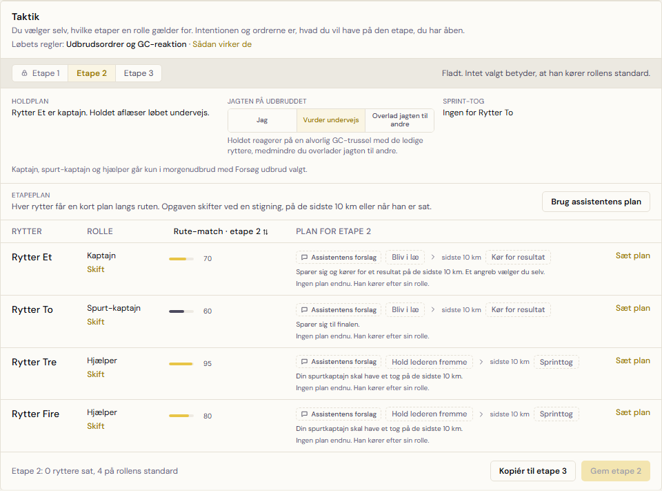
Efter: Etapesejr vælger rytteren ud fra dagens rute. Roller og opgaver ligger i en ugemt kladde.
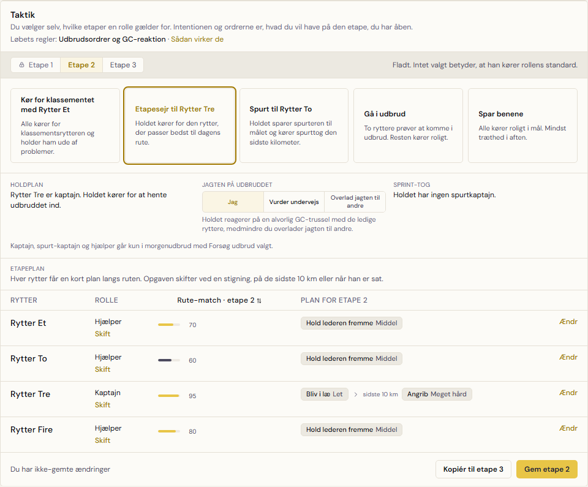
Før: holdplan og manuel editor uden de fem valg.
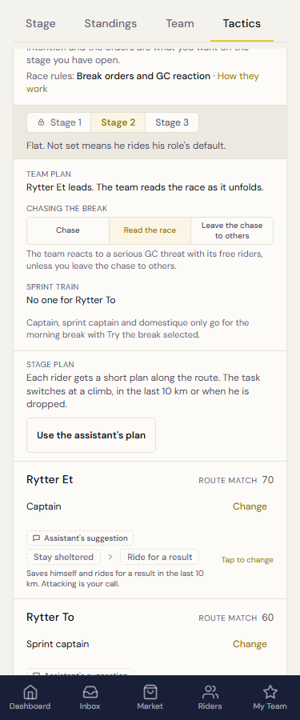
Efter: holdplanerne vises med rytternavne og forklaringer. Den gule gemmehandling bekræfter senere.
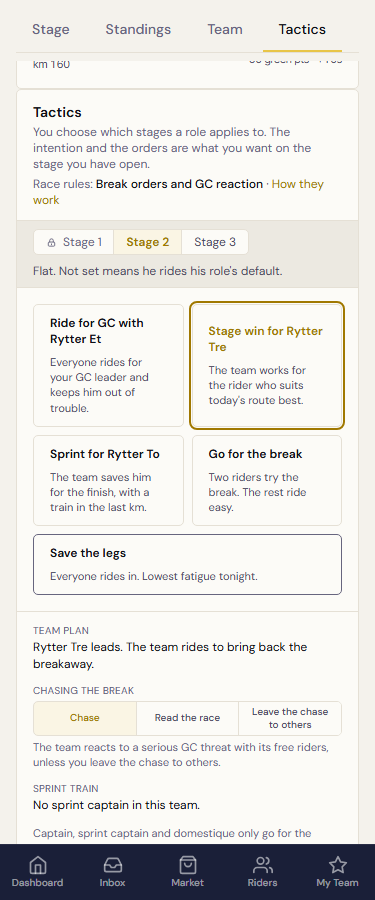
Før: den manuelle etapeplan uden prisord.
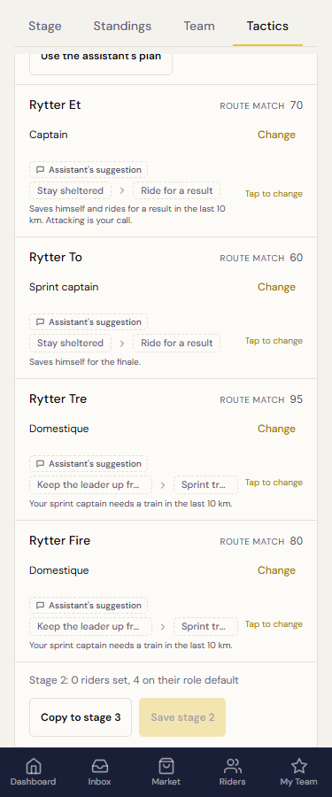
Efter: hele opgavenavnet og prisen i ord. Ugemt-status og Gem etape 2 er synlige.
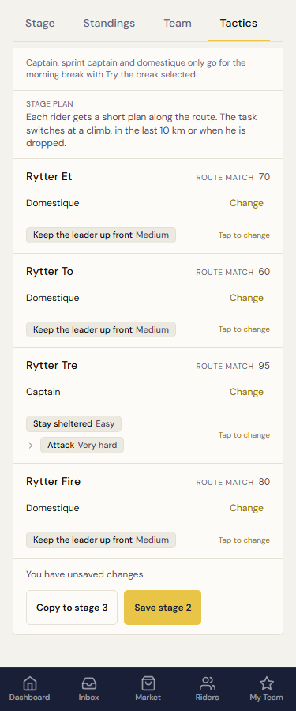
Før: kompakt etapeprofil.
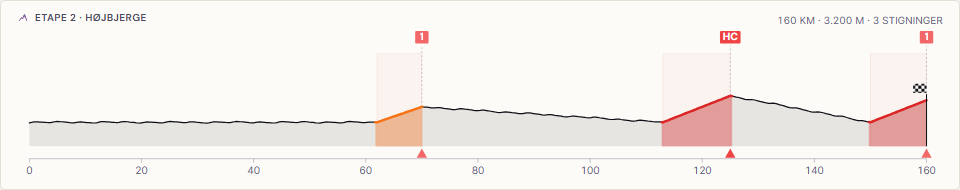
Efter: det fælles fulde profilkort med stigningsnavne, valgknapper og detaljer om den valgte stigning.
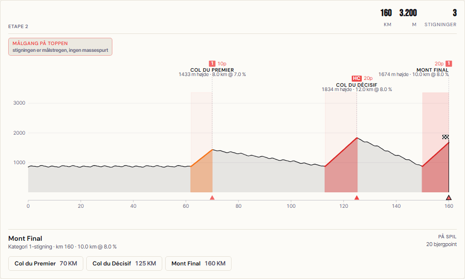
Før: kompakt etapeprofil.
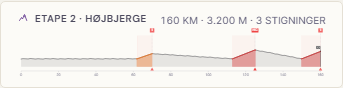
Efter: stigningernes navne kan vælges under profilen; den valgte stignings detaljer vises ovenfor.
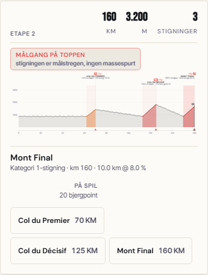
Før: destinationsetape 3 med den oprindelige plan.
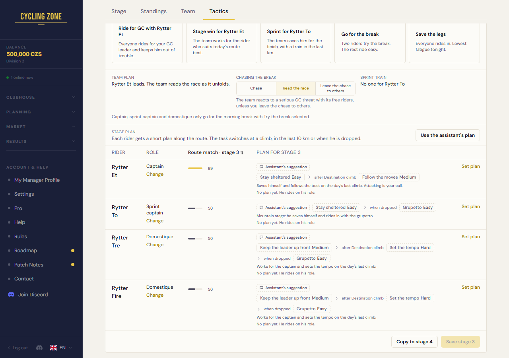
Efter: etape 3 har sin egen plan og sit eget navngivne rutepunkt. Gemte undtagelser bevises separat i testen.
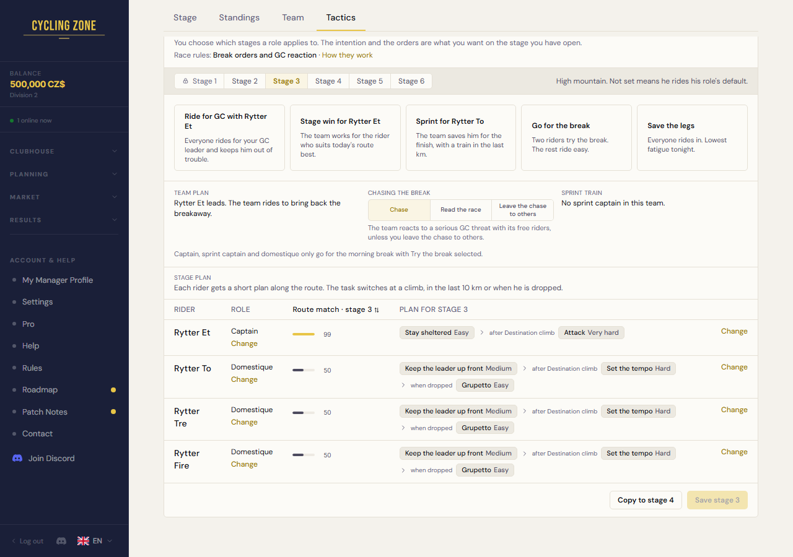
Før: destinationsetape 3.
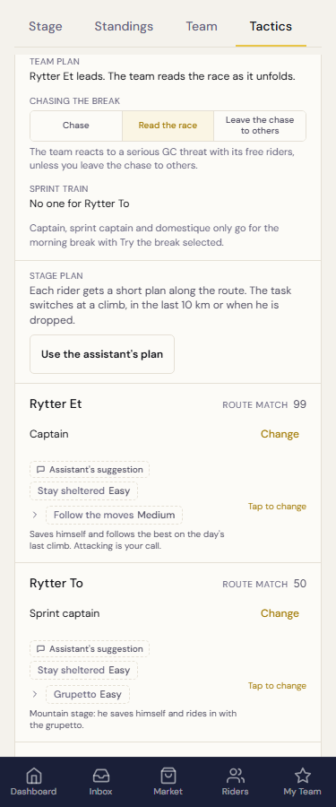
Efter: destinationens plan med opgaver og prisord. Billedet viser ikke det navngivne triggerpunkt; det ses på desktop ovenfor.
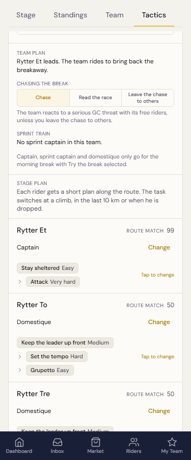
Desktop og mobil Chromium: handlingen viser etape 3, 6 og deres profiltype. Kopiering laver kladder; Gem bekræfter dem. Etape 5 er allerede gemt og indgår ikke.
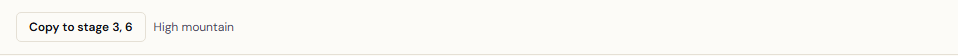
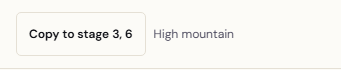